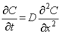
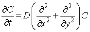
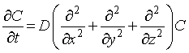
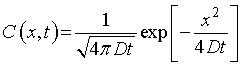
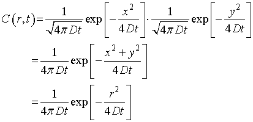
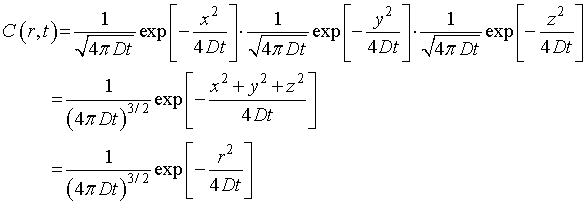

1点から発せられた粒子の拡散運動
拡散の様子は，フィックの第2の方程式を解くことによって解が得られます． 詳しくは，生物学におけるランダムウォーク，をご覧ください．

Dは拡散定数です．これは，1次元の場合であって，
2次元：

3次元：

となります．
さて，これを解くのですが，これがなかなか大変なので，結果だけを示すと，

となります，これは1次元の場合です． 2次元になると，

3次元では，
